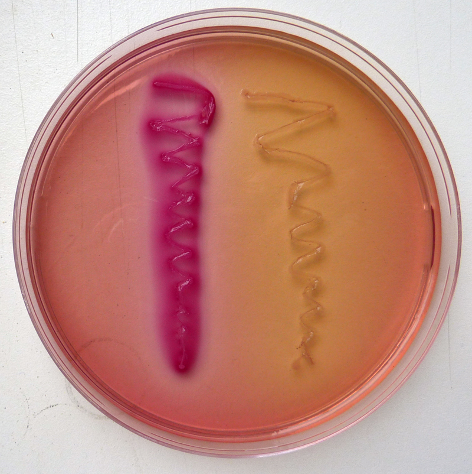
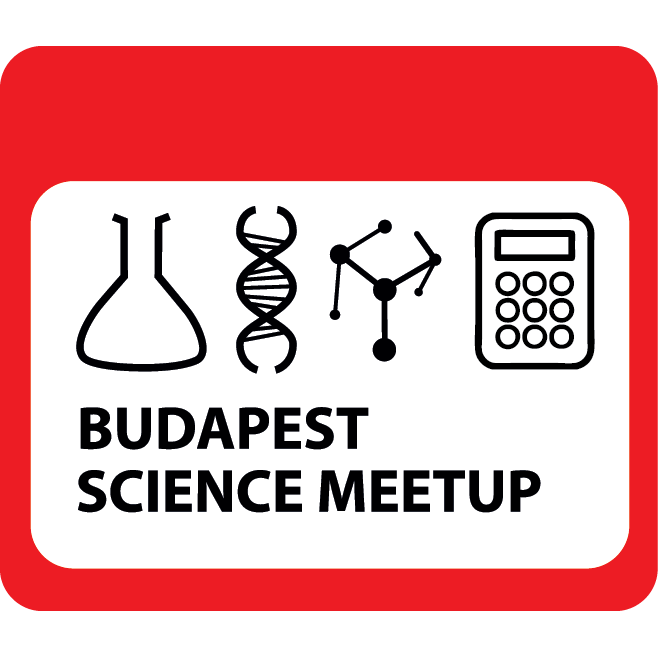
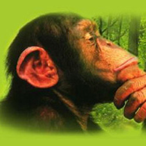

Oktatás, ismeretterjesztés
Oktatott tárgyak
- 
- Genetika gyakorlat (BSc): Csoportunk az alapszak kötelező Genetika gyakorlatának Mikrobiális Genetika blokkját oktatja. A gyakorlat során a hallgatók megismerhetik a komplementáció jelenségét, valamint elsajátíthatják az egyszerű génexpressziós rendszerek (operonok) működési logikáját.
- Géntechnológia és fehérjemérnökség (MSc): Az MSc képzés egyik nagyobb lélegzetvételű tárgyán belül a genomszerkesztésről, transzgénikus élőlények készítéséről, valamint optogenetikáról szóló előadásokért felelünk.
- Őssejtek és regeneráció (MSc): Embrionális és szomatikus őssejtek, indukált pluripotens őssejtek (iPSC-k) és organoidok. Gerinctelen és gerinces szomatikus őssejtmodellek bemutatása. Gerinctelen regeneráció: hidrák és planáriák. Végtagregeneráció gerincesekben. A rák "őssejt" elmélete.
- A Genomika (MSc) kurzuson belül a következő blokkok tartoznak hozzánk: Az eukarióta génexpresszió szabályozása. Epigenetika. Ivari kromoszómák és szex-determinációs rendszerek. Metazoa genomprojektek. Bakteriális genomika és eukarióta organellumok genomja.
- Prokarióta génexpresszió (MSc): Transzkripció és transzláció molekuláris mechanizmusa. Transzkripció aktiválása és gátlása transzkripciós faktorokkal, DNS hajlítással. A transzkripció és a transzláció attenuációja (ribokapcsolók). Bakteriális kommunikáció, biofilmek. Az antibiotikum rezisztencia genetikai háttere. Transzkripciós hálózatok dinamikája, szintetikus biológia.
- Fejlődésgenetika gyakorlat (MSc): A gyakorlat során a hallgatók elsajátítják egy egyszerű genetikai screen elvégzését C. elegans modellen, immunhisztológiai vizsgálatokat végeznek ecetmuslica és zebradánió embriókon, valamint szintén zebradánió embriók segítségével megtanulják egy kismolekula-screen metodológiájának és logikájának alapjait.
- Az MSc-s képzés átfogó Ember és természet tárgyán belül tartott előadásban a géntechnológia alkalmazásának vélt és valós veszélyeit tárgyaljuk meg, azok társadalmi vonatkozásaival egyetemben.
Ismeretterjesztés

Bp Science Meetup
A Budapest Science Meetup azért lett, hogy legyen egy hely, ahol kutatók mesélhetnek tudományról, nem csak (sőt, főleg nem) szakmabelieknek.
Bővebben

Critical Biomass
A Kritikus Biomassza egy biológus-blog, ahol fejlődésbiológiáról, géntechnológiáról és tudománykommunikációról esik szó.
BővebbenMédiaszereplések:
- 2018.02.19: Klubrádió - Ötös
- 2017.10.10: Inforádió - Szigma (Új módszerrel végzett vizsgálatok humánembriókon)
- 2017.07.16: M1 - Minden tudás (A regenerálódás igazi császára a zebradánió)
- 2017.06.24: Magyar Nemzet - Magazin (Gerinces modellállat)
- 2017.05.06: Szertár podcast (Az ember a zebrahal mögött)
- 2017.03.10: Inforádió - Szigma (Létrehozható-e „mamutosított verzió” az ázsiai elefántból?)